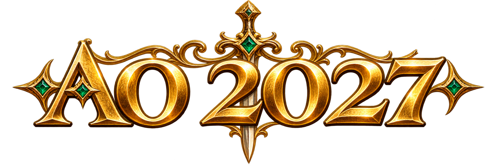

Las flechas, Ctrl (atacar), Enter (chat), Esc y F1–F10 no se reasignan.
Francotirador, que tuvo la idea de este proyecto y lo banca para que siga adelante. ¡Gracias!
AO 2027 es un port de CoverAO-2021, una variante de Argentum Online. Lo que viene de cada lado y a quiénes se les debe está en CREDITOS.md.